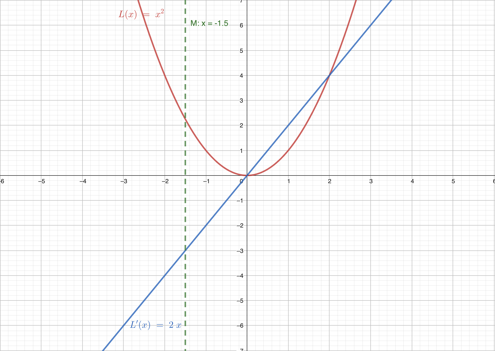

Gradient Descent
在上一节，我们通过线性回归了解了基础的监督学习的模型。我们定义了模型，成本函数，并尝试优化成本函数。优化成本函数使得我们的模型能够更好地完成任务（拟合数据）。在这一节，我们将介绍一个常用的优化算法：梯度下降（Gradient Descent）。其是一种更通用的方法用于最小化函数。
1. 梯度下降


原理：梯度下降为什么总是能走向最深的点
梯度下降的本质推导来源于泰勒展开。泰勒展开是一个非常重要的数学工具，它可以将一个函数在某一点附近用一个多项式来近似表示。泰勒展开的公式如下：
TODO: https://en.wikipedia.org/wiki/Taylor_series 图
其将函数在 处使用多阶导数展开，展开的多项式的次数为 。换句话说如果我们一级展开，我们则需要使用 0 阶导数（函数值）和一阶导数（斜率）；如果我们二级展开，我们则需要使用 0 阶导数 （函数值）、一阶导数 （斜率）和二阶导数 （曲率，或者说，导数的导数）以此类推。
我们可以通过泰勒位于 的展开，近似原函数 位于 时的值。其有两个非常有用的性质：
- 当我们需要拟合的点 离 越近，泰勒展开后的结果越接近原函数。
- 当泰勒展开次数越高，拟合的效果越好。
我们假设 为损失函数，我们认为 为最优权重。我们期望从 达到最优权重 。我们对损失函数 位于 进行一阶泰勒展开，即：
如果我们认为更新后的权重 是 增加一个单位向量 伴有学习率 ，则可以写成
我们可以将上式代入到损失函数的泰勒展开中，得到：
我们可以认为 是损失函数在 处的梯度与更新的方向 的点积。
其中 是 与 的夹角。
考虑单位向量 ，其的膜度为1，即 。因此我们可以得到：
如果假设 的膜长不变，则其的点积越大，说明 越小，也就是说我们的更新方向越接近于梯度的方向。
根据三角函数的定理，我们可以地到 ，其最小值当且仅当 时取到，而其最大值则为 时取到。因此我们可以得到：
我们的目标是使 最小化，也就是说我们希望 最小化。因此我们可以得到结论：当 与 的夹角为180°（即 ）时， 取得最小值。即 与 反向时， 取得最小值。
考虑 为 的反向，且为单位向量我们可以得到：
将其代入至原函数：
考虑 是一个标量，我们可以令 ，则可得：
因此我们可以证明出最终的结论：梯度下降总是能走向最深的点。
拓展：IRLS
如果将泰勒展开展开至二阶，则有
令其导数为0，我们可以得到
即在二阶泰勒展开中，我们认为损失函数 的最低点可以由 得到。而 可以看作是 的更新方向。
因此我们可以定义新的梯度下降函数为
其中 为 Hessian 矩阵， 为 Hessian 矩阵的逆矩阵。
TODO
我们将新的更新公式命名为 IRLS（Iteratively Reweighted Least Squares）算法。其是一种迭代的最小二乘法，其在每次迭代中都会重新计算权重。